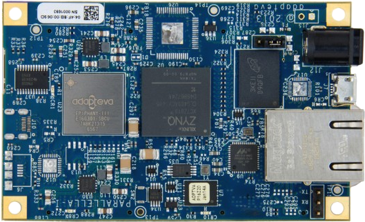

Tech talks schedule with abstracts
Optimizing Audio Content Delivery at Scale
Speaker: Niklas Gustavsson (Spotify)
Time: Monday, 26/1, 12.00 - 13.00
Spotify delivers, and this is the technical term, a shitload of audio content to its users. And we want to do so with low perceived latency and good audio quality. As the number of users increases, lives in ever more remote regions and in more heterogeneous device and network environments, this has turned into quite a challenge.
This talk will go into detail on these challenges, and the designs aimed at keeping the Spotify user experience getting ever better. This includes how the internal audio pipeline works and some of the optimizations in place to make it perform even under the worst conditions.
Designing the Epiphany Parallel Processor: Standing on the Shoulders of Giants with Blinders in Place

Speaker: Andreas Olofsson (Adapteva)
Time: Monday, 2/2, 12.00 - 13.00
In 2008 I left my long time employer (Analog Devices) to start a company with a mission to build a new type of parallel computer. This talk will present the inspiration, design philosophy, mistakes, success, iterations and surprises encountered in designing the Epiphany computer architecture, four generations of Epiphany chips, and the $99 Parallella credit card sized “supercomputer” project.
Embedded High-Performance Processing – Challenges in Long-Lifetime Applications
Speaker: Anders Åhlander (Saab)
Time: Monday, 9/2, 12.00 - 13.00
There is typically a mismatch between the life time of a processing technology generation and the life time of a sensor application. For instance, a radar application may have a life span of 20 years, which translates to many generations of processing technology. This imposes several interesting problems.
This talk will focus on how to get engineer efficient development/maintenance of long-lifetime embedded high-performance applications. How do we handle the mismatch in life time, can we efficiently exploit the evolving processor architectures for functional growth and increased system performance, what possibilities for higher engineering efficiency arise when computational performance increases, etc.?
Safe and Secure Programming Using SPARK

Speaker: Angela Wallenburg
Time: Monday, 16/2, 12.00 - 13.00
Sometimes software really has to work. SPARK is a programming language, a verification toolset and a design method which, taken together, ensure that ultra-low defect software can be deployed. By design, the SPARK language is immune to many programming language vulnerabilities (such as those listed by NIST/CWE/SANS). Under the hood, the SPARK static analysis tools use formal verification (automatic mathematical proof).
Generally formal verification is rarely used in industry due to its high cost and level of skill required. However, over the past 25 years SPARK has been applied worldwide in a range of industrial applications. A few examples include Rolls Royce Trent (engine control), EuroFighter Typhoon (military aircraft), and NATS iFACTS (air traffic control). Recently, SPARK has been attributed the reason of success for the Vermont Tech CubeSat, the only one that is still fully operational of NASA’s 2013 launch of 11 mini satellites (ELaNa project).
During this talk you will learn about the rationale of SPARK. We will cover topics such as strong typing, unambiguous semantics, modular verification, contracts, the verifying compiler, scalability, powerful static analysis, combination of test and proof, and cost-competitive development of software to regulations (such as DO-178C).
Real Time Deformation in Need for Speed™
Speaker: Andreas Brinck (EA Ghost)
Time: Monday, 23/2, 12.00 - 13.00
We will showcase how we’re using a FEM simulation implemented in compute shaders to apply controlled large scale deformations to a vehicle. The presentation will cover the FEM simulation, mesh generation, and explain how this is used to control the visual representation of a vehicle in the next Need for Speed™.
Model Driven Development in Automotive Mechatronics
Speaker: Jonn Lantz (Volvo Cars)
Time: Monday, 2/3, 12.00 - 13.00
The automotive industry today is transforming rapidly, in a way similar to the telecom when the millennia was young. The amount of code in cars in growing exponentially with time, and a modern premium car can have over 100 ECUs (embedded computers) in a complex network, with numerous sensors, mechatronic devices and external connections. The new hybrid cars are even more complex. Thus, the challenge is not the same as in the telecom industry, as the car is highly mechanized. Many systems in the car involve feedback loops depending on mechanics, from simple actuators as mirrors to advanced torque control keeping the vehicle on track. As most of these systems involve software they have to be developed using incremental methods. It is impossible to specify the functionality before it has been developed. Hence, “agile” methods are often practiced. However, mechanical devices cannot be developed in this flexible way. They have to be specified and ordered. The solution is to develop software using “plant models”, models of the (assumed) physical system, which are used in test benches and virtual environments – where the software can be tested. Another important aspect of modelling is that the abstraction allows non software experts, as mechanics/electronics engineers, to develop software. Hence, a strategy has formed where almost the complete software related system is developed using models – of software, hardware, communication, environment, etc. The current challenge is to adopt this strategy more to “agile” methods on system (car) level, with fast and reliable feedback from design updates. Historically, model based development has been used mainly for design or descriptive purposes and the change involves a significant “mind shift” for companies, tool vendors and researchers, and lot of new development of tools and frameworks is still required.
TBA
Speaker: Claes Wikström (Cisco)
Time: Monday, 9/3, 12.00 - 13.00